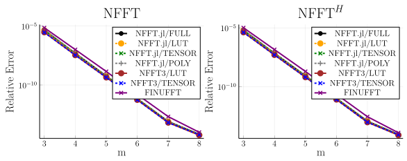
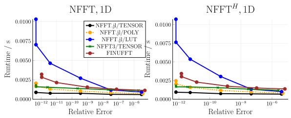
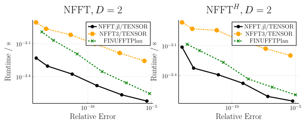
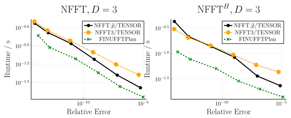

Accuracy and Performance
On this page, the accuracy and the performance of NFFT.jl are investigated. For comparison we use the C library NFFT3 and the C++ library FINUFFT. The shown data are useful for understanding the performance characteristics of the NFFT and help choosing the parameters accordingly.
Accuracy
We start with the accuracy. The following plot shows the relative error of a 2D NFFT ($N=(64,64), M=64^2$) compared to the NDFT for different choices of $m$ and $\sigma = 2$:

What can be seen is that the error decreases exponentially with $m$. For about $m=8$ the error reaches the machine precision and the NFFT then can be considered to be exact in floating point arithmetics.
In practice, however, one often uses Float32 instead of Float64 in which cases $m$ can be chosen much smaller. If the values encoded in the NFFT vectors are for instance images, a value of $m = 3$ or $m = 4$ is often sufficient since the human eye can only discriminate about three orders of magnitude in gray values.
Next we fix $m$ and look at different oversampling parameters:

FINUFFT is not included in this plot since it does not allow to adjust the oversampling factor freely. One can see that the accuracy improves with increasing oversampling factor. However, one needs to keep in mind that the memory consumption of the NFFT increases with $\sigma^D$ and in turn one usually keeps it below 2. One rule of thumb is to use $\sigma=2$ if memory consumption is no concern and switch to $\sigma = 1.25$ with an accordingly increased $m$ if memory consumption is a concern (e.g. for 3D transforms).
In both figures one can see that independent implementations reach very similar accuracy. There are some smaller implementation details (different window functions, different kernel size handling) that slightly affect the accuracy. For instance NFFT3 uses a kernel size of $(2m+2)^D$ while NFFT.jl and FINUFFT use $(2m)^D$.
Performance
Next, we investigate the performance of the NFFT and benchmark the following three operations:
- forward NFFT
- adjoint NFFT
The parameters for the benchmark are
- $N_\text{1D}=(8192,), N_\text{2D}=(64,64), N_\text{3D}=(32,32,32)$
- $M=N^2$
- $m=3, \dots, 8$
- $\sigma = 2$
- 1 thread
- sorted random nodes
All benchmarks are performed with @belapsed from BenchmarkTools.jl which takes the minimum of several runs (10 s upper benchmark time). The benchmark is run on a computer with 2 AMD EPYC 7702 CPUs running at 2.0 GHz (256 cores in total) and a main memory of 1024 GB. The benchmark suite is described here.
The results for $D=1,\dots,3$ are shown in the following graphics. In these graphics we plot the performance versus the accuracy for various $m$. This allows to account for the slight accuracy differences discussed earlier.
  
The results show that all three packages are within the same order of magnitude performance. NFFT.jl is fastest for 1D and 2D while in 3D NFFT.jl and FINUFFT are close together for the forward NFFT and FINUFFT is faster for large $m$ and the adjoint NFFT.
Multi-Threading
Next, we we look at the multi-threading performance and this time keep $m$ fixed but include different precomputation strategies and also look at the precomputation time.
The parameters for this benchmark are
- $N=(64,64)$
- $M=64^2$
- $m=4$
- $\sigma = 2$
- 1, 2, 4, 8 threads
- precompute
NFFT.LUTandNFFT.TENSORfor NFFT.jl and NFFT3 - sorted random nodes
The results are shown in the following graphic:

Observations:
- All packages are within a factor of about three.
- They are properly multi-threaded and scale with the number of threads.
NFFT.TENSORis faster thanNFFT.LUTbut has larger precomputation time.